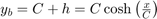
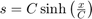
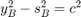
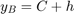
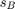
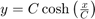

Mars Colony Catenary Cable Intersection Calculations
This program uses a generalization of the catenary curve to model the deflection of the cable under uniform pressure.
Contents
- Preset Values
- Resources Used:
- Initial Calculation
- Find the value of C
- Calculate the maximum tension, ocurring at the endpoints
- Use Hooke's Law to calculate change in length and the new arc length
- Recalculate the expansion constant
- Recalculate the deflection
- Check if the guess has converged upon the actual value
- Set the guessed values to the current values
- Intersection Calculations
Preset Values
Pressure = 101000; %Pa %Dyneema Material Properties Length = 1.0; %m Width = 1.0; %m D = 3*10^(-3); %m CrossArea = pi*D^2/4; E = 150*10^9; %Pa
Resources Used:
Initial Calculation
d_0 = 0.01; % Initial deflection guess, m C_0 = 7; % Initial expansion constant guess, m % For the initial calculation, the total force from pressure applied to the door is % taken to be equally supported by all of the horizontal cables. numCables = floor(Width/0.1) + floor(Length/0.1); % Find the number of cables placed in 10cm intervals force_per_length = (Pressure * Width^2)/numCables; % Force per unit length acting on each cable continueIterate = true; while continueIterate
Find the value of C
Using the equation , the value of C is approximated from the currently guessed values
findC = @(C) C*cosh((0.5)/C) - C - d_0; C = fzero(findC, C_0);
Calculate the maximum tension, ocurring at the endpoints
end_Tension = force_per_length * (C + d_0);
Use Hooke's Law to calculate change in length and the new arc length
stress = end_Tension/CrossArea; strain = stress/E; deltaLength = strain*Width; ArcLength = deltaLength + Width;
Recalculate the expansion constant
With the calculated arc length, a new value for C is found using the equation 
newC = @(C) C*sinh((Width/2)/C) - ArcLength/2; C = fzero(newC, 0.8);
Recalculate the deflection
Calculate the a new value for the deflection using the relationship , where  and  is the arc length from the midpoint to the endpoint
deflection = sqrt(C^2 + (ArcLength/2)^2) - C;
Check if the guess has converged upon the actual value
if abs((deflection-d_0)/d_0) < 0.0001 disp(['The deflection of the central cable is ' num2str(deflection)]); break end
The deflection of the central cable is 0.061514
Set the guessed values to the current values
d_0 = deflection; C_0 = C;
end
main_C = C;
Intersection Calculations
Using the C value of the central cable, calculate the end tension of cables having a deflection equal to the deflection of the main cable at that point. This section makes use of the general equation of the catenary, 
catenary = @(c,x) c*cosh(x/c); % Catenary equation for i = 0.1:0.1:0.4 current_C = catenary(main_C,i); % Get the C value of the current cable current_yB = catenary(current_C, 0.5); % Find the distance from the x-axis to the endpoint of the cable max_Tension = force_per_length * current_yB; % Calculate the tension at the endpoint of the cable current_Deflection = current_yB - current_C; % Find the deflection of the current cable disp(['The deflection after ' num2str(i*100) 'cm is ' num2str(current_Deflection*100) 'cm.']); disp(['The maximum tangential tension in the cable at this point is ' num2str(max_Tension) 'N.']); end
The deflection after 10cm is 6.144cm. The maximum tangential tension in the cable at this point is 10635.8559N. The deflection after 20cm is 6.1217cm. The maximum tangential tension in the cable at this point is 10671.8622N. The deflection after 30cm is 6.085cm. The maximum tangential tension in the cable at this point is 10731.9868N. The deflection after 40cm is 6.0342cm. The maximum tangential tension in the cable at this point is 10816.4004N.